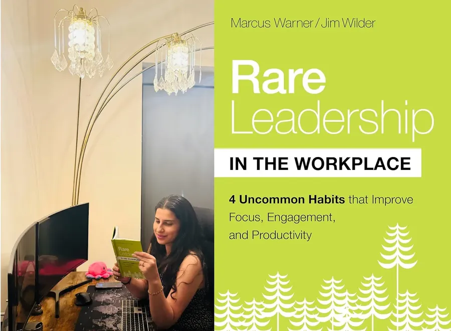
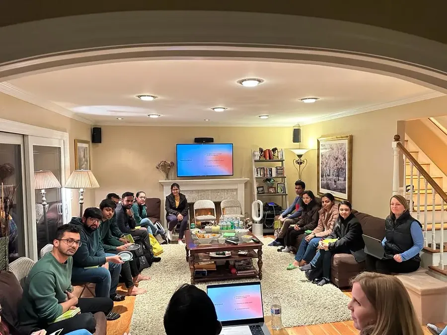
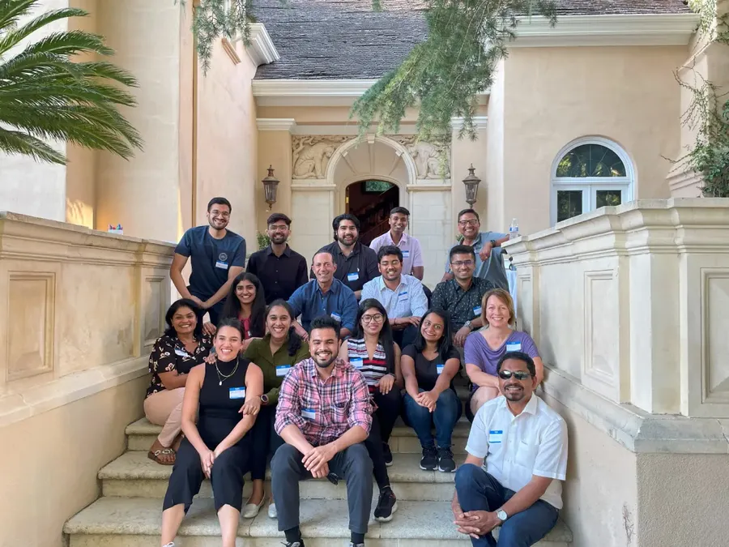
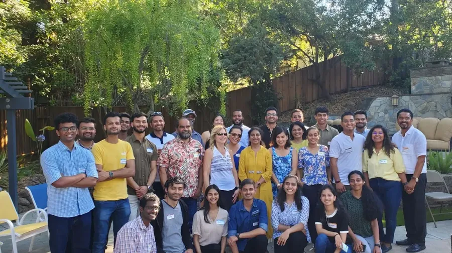
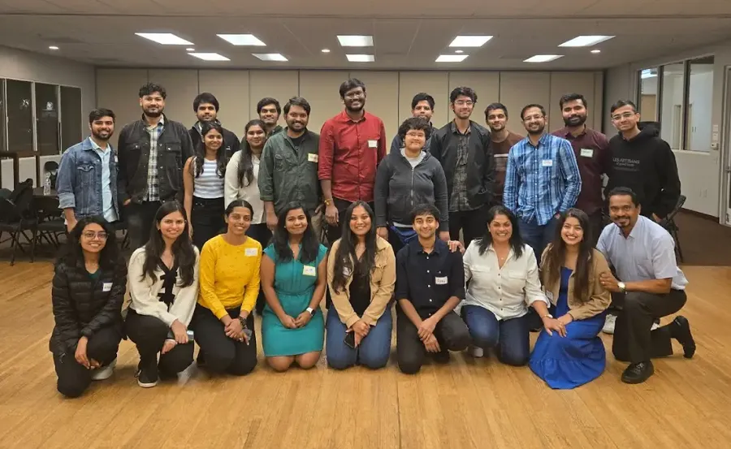
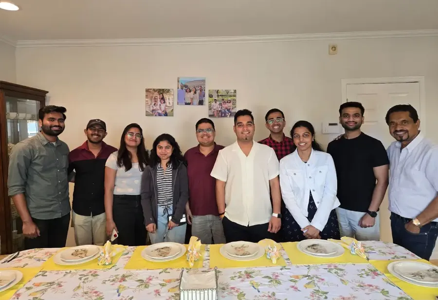
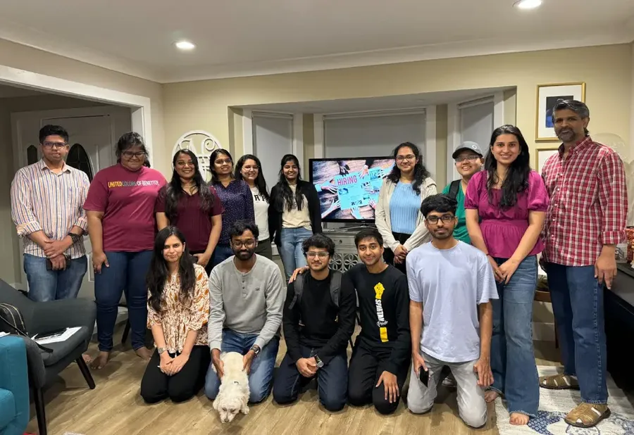
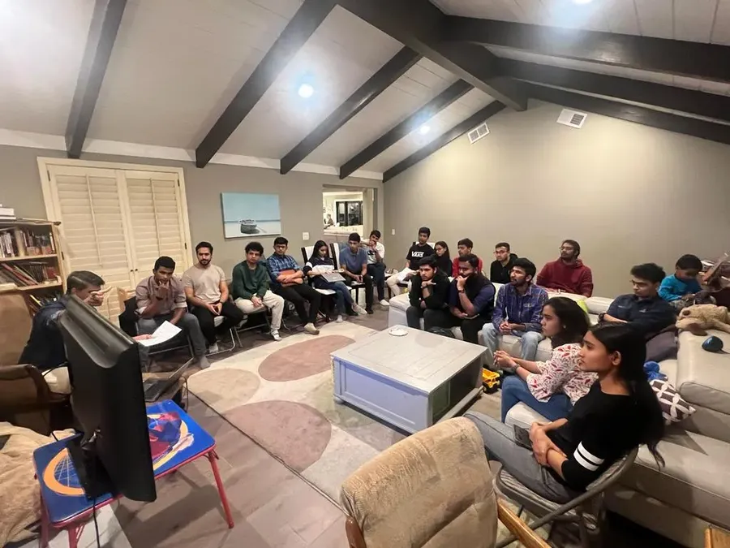

High-impact initiatives
Skills that last a career
Peer-led programs that help students lead, connect and land their first roles in America.
RARE Leadership Program


A 6-week leadership course with 2-hour weekly sessions for a small group of 10 to 12 professionals or students, based on the book Rare Leadership by Marcus Warner and Jim Wilder.
Couples lead the sessions and share personal experiences. Topics include leading with joy, staying relational under stress and building emotional maturity. Spots are limited.
Networking Events


Professional networking events connect students with seasoned professionals in Silicon Valley, a way to connect, learn and grow.
A separate track on entrepreneurship is led by Julianne and Ken Raasch.
Interview Prep Program


A peer-led program with two tracks. Level 1, Ace Your Internship Hunt, is for students starting their search, including those new to the U.S. Level 2, Conquer Full-Time Job Interviews, covers advanced technical and interview preparation.
Sessions cover networking, handling tough interview questions and staying motivated through a job search.
Resume Writing Workshop


A hands-on workshop that helps participants build a resume that tells a compelling story and stands out to recruiters. Hundreds of students have been through it.
Be the reason no student walks alone
Give, volunteer or host a student. Every bit of kindness counts.